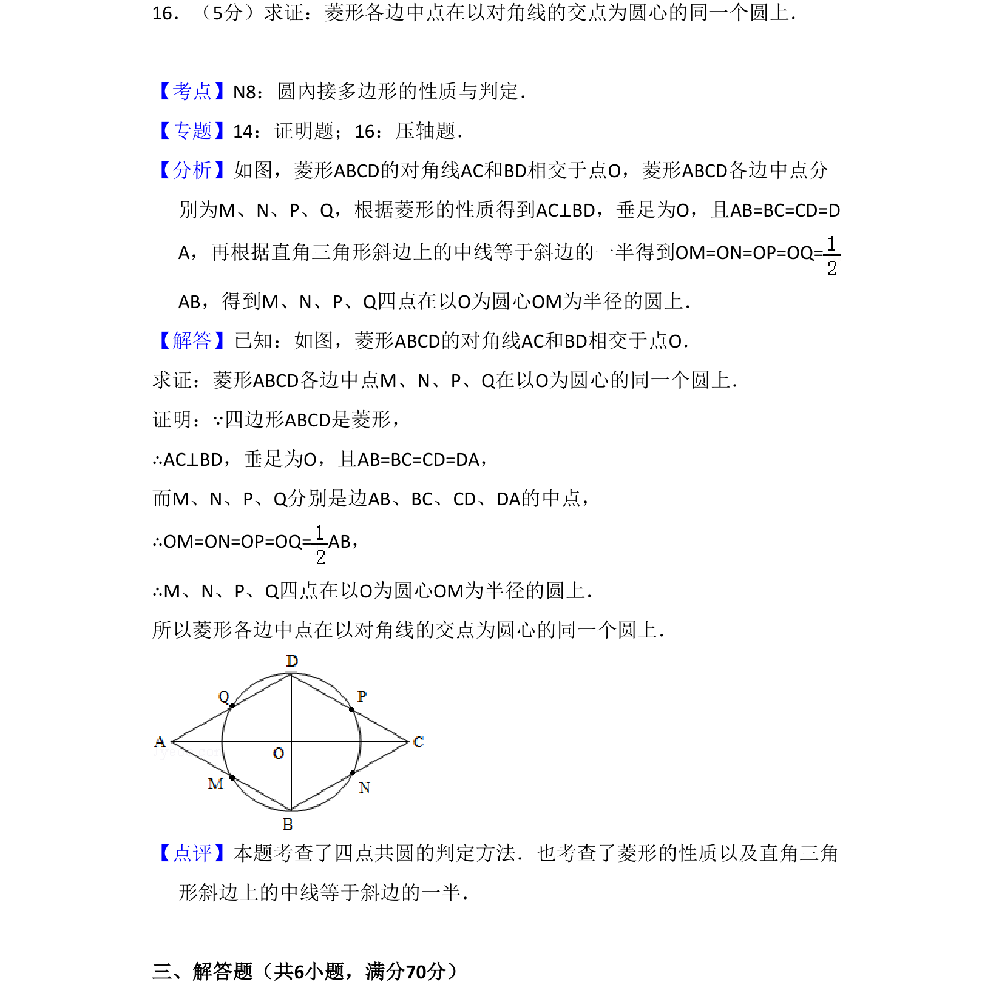
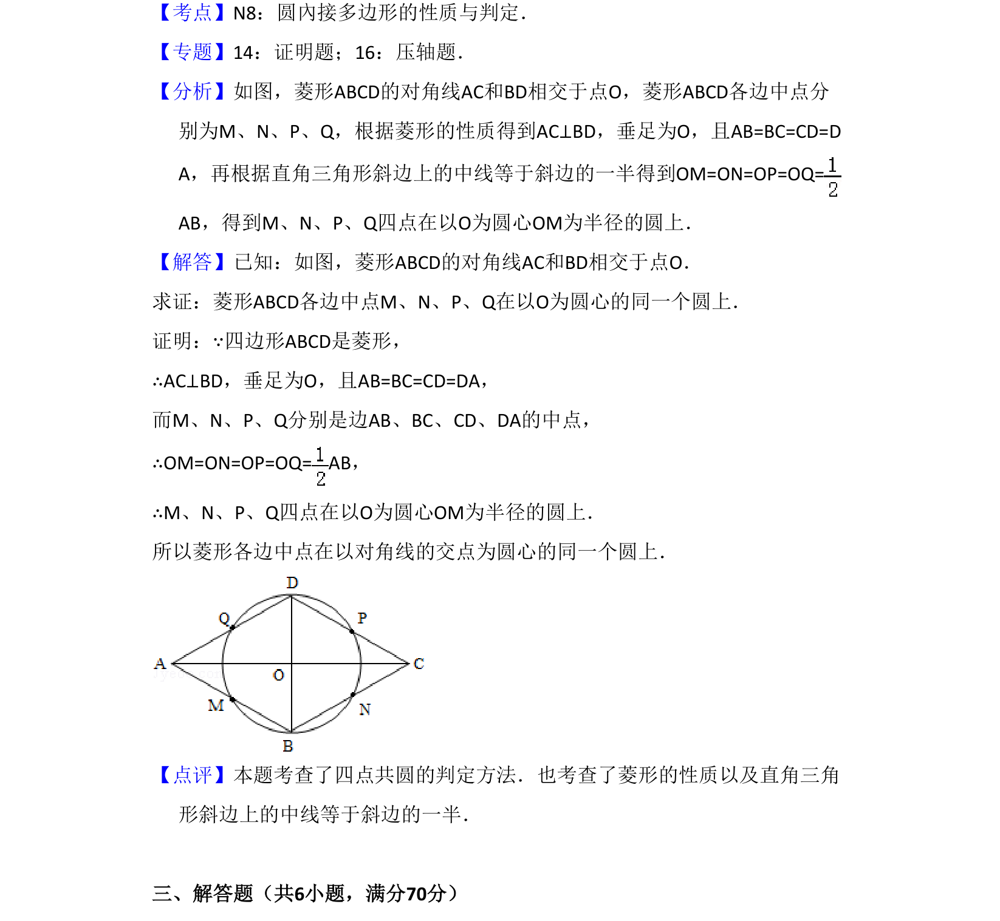

考点：圆內接多边形的性质 菱形的性质 直角三角形斜边中线

菱形各边中点到对角线交点距离相等，证四点共圆

📄 原 PDF 第 11 页：
素材/真题/吉林/2008-2024·（吉林）数学高考真题/2009年高考数学试卷（理）（全国卷Ⅱ）（解析卷）.pdf
16．（5分）求证：菱形各边中点在以对角线的交点为圆心的同一个圆上．
【考点】N8：圆內接多边形的性质与判定．菁优网版权所有 【专题】14：证明题；16：压轴题． 【分析】如图，菱形ABCD的对角线AC和BD相交于点O，菱形ABCD各边中点分 别为M、N、P、Q，根据菱形的性质得到AC⊥BD，垂足为O，且AB=BC=CD=D A，再根据直角三角形斜边上的中线等于斜边的一半得到OM=ON=OP=OQ= AB，得到M、N、P、Q四点在以O为圆心OM为半径的圆上． 【解答】已知：如图，菱形ABCD的对角线AC和BD相交于点O． 求证：菱形ABCD各边中点M、N、P、Q在以O为圆心的同一个圆上． 证明：∵四边形ABCD是菱形， ∴AC⊥BD，垂足为O，且AB=BC=CD=DA， 而M、N、P、Q分别是边AB、BC、CD、DA的中点， ∴OM=ON=OP=OQ= AB， ∴M、N、P、Q四点在以O为圆心OM为半径的圆上． 所以菱形各边中点在以对角线的交点为圆心的同一个圆上． 【点评】本题考查了四点共圆的判定方法．也考查了菱形的性质以及直角三角 形斜边上的中线等于斜边的一半． 三、解答题（共6小题，满分70分）